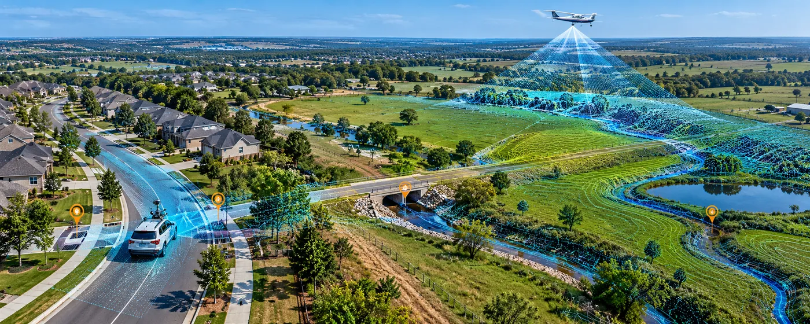

The Assignment
Accurate mapping of drainage infrastructure across large and varied environments requires a combination of capture technologies capable of documenting both developed and less accessible areas.
The assignment covered approximately 800 acres spanning residential neighborhoods and pasture, requiring detailed geospatial capture to support mapping of drainage infrastructure across mixed terrain and land-use conditions.
Our Approach
The CS TECH Ai team combined multiple reality-capture technologies to efficiently capture the project area and develop comprehensive geospatial information for drainage infrastructure mapping.
The engagement included:
- Geospatial data capture across approximately 800 acres
- Coverage of both residential neighborhoods and pasture areas
- Aerial LiDAR capture for broad-area terrain and surface information
- Mobile LiDAR capture along accessible road and transportation corridors
- Photogrammetric data capture to complement LiDAR datasets
- Integration of data acquired through multiple capture methods
- Processing of captured spatial information for drainage infrastructure mapping
- Development of geospatial outputs supporting visualization and analysis of existing site conditions
The combination of LiDAR and photogrammetry enabled the capture strategy to be adapted to different environments across the project area rather than relying on a single acquisition method.